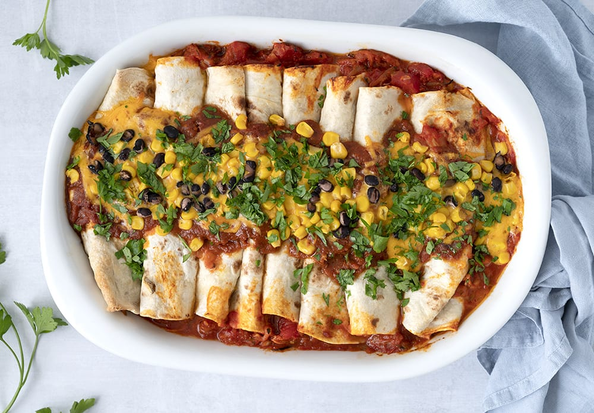

Enchiladas con pollo

Description
Enchiladas con pollo is one of the most popular dishes to come
out of the texmex kitchen. And for good reason; it is both delicious
and easy to make!
The soft tortilla wraps filled with tender chicken in a special
tomato enchilada sauce make for a winning combination of flavours.
Ingredients
Enchilada sauce
- 1 tsp. ground cumin
- 1 tsp. cinnamon
- ½ tsp. smoked paprika
- 1 tsp. sweet paprika
- 1 dash of cayenne pepper
- ½ tsp. ground coriander
- 1 tsp. garlic powder
- 1 tbsp. olive oil
- ½ onion, finely chopped
- 1 tsp. wheat flour
- 1 tin of chopped tomatoes
- 1 dl vegetable broth
- Salt
- Black pepper, freshly ground
Pulled chicken
- 2 chicken breasts
- ½ dl vegetable broth
- 1 tin of chopped tomatoes
- 1 tbsp. olive oil
- 2 cloves of garlic, finely chopped
Miscellaneous
- 150 g corn
- 1 tin of black beans, washed and drained
- 50 g cheddar cheese, freshly grated
- 1 handfull of parsley
- 8 tortilla wraps
Steps
Enchilada sauce
- Put all the spices in a pot and heat them until it starts to smell good.
- Take the pot off the heat, add oil and onions and sauté at medium heat.
- Stir flour well into the onion mix.
- Add vegetable broth and stir until there are no clumps of flour.
- Add chopped tomatoes and let simmer without a lid for 10-15 minutes.
- Add more salt, pepper, chili or cayenne pepper if needed.
Pulled chicken
- Bring chicken, tomatoes, vegetable broth and oil to simmer in a pot for 30 minutes or until tender.
- Pull the chicken apart with two forks and mix it with the tomato sauce in which it was cooked.
Assemble the dish
- Fill the wraps with black beans, corn, grated cheese and chicken.
- Cover the bottom of a heat proof pan with enchilada sauce.
- Place the wraps in the pan "seams" facing down and pour enchilada sauce and grated cheese on top.
- Bake for 15-18 minutes in a preheated oven at 180 degrees.